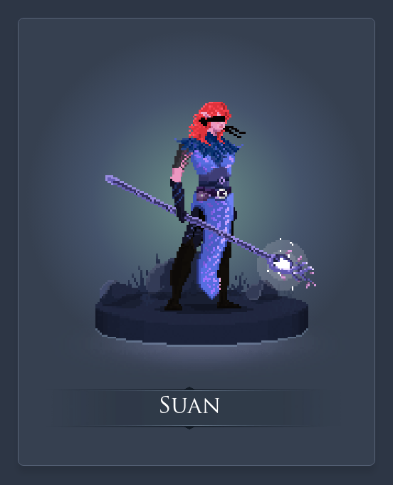

Escolha seu Personagen:
Habilidades
Passiva:Ao atacar um inimigo Sua drena sua vida durante 2 segundos
habilidade Q:Joga sua energia maligna que causa dano magico e prende seu alvo em uma ilusão

Habilidade W:Cura seu aliado em 20% da vida perdida

Habilidade E:Cria um campo de escuridão que causa dano magico e cega o alvo

Habilidade R:Suan se transforma na maga suprema causando dano magico baseado em vida maxima em inimigos proximos e curando aliados proximos e suas habilidades terão a força dobrada

Fontes
deviantart.com/ realtimevfx.com/ wattpad.com / tenor.com